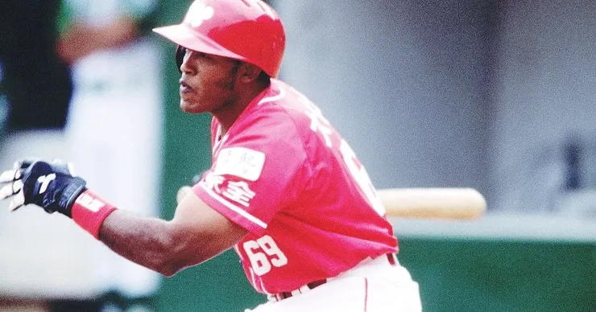

當張政禹在 2026 年 5 月 17 日驚天一跑，用中職 22 年來首見的「單獨盜本壘」震驚全網時，無數老龍迷的記憶瞬間被拉回了 29 年前。
張政禹的驚天一盜，讓龍迷回想起壘包間的紅色閃電
1997 年，味全龍在徐生明總教練的帶領下，靠著大帝士（71次盜壘）、法蘭克、黃煚隆等人無情撕裂防線，成功奪下復歸後的第一座總冠軍，並開啟了第一個隊史三連霸王朝。當時的龍魂，核心信仰就是「速度戰」。
29 年過去了，2026 年的二代龍，陣中悄悄集結了近年中職天賦最可怕的「新一代超速部隊」：郭天信、李凱威、張政禹、曾聖安，以及音速小子林孝程。
如果歷史已經證明速度戰能帶來王朝，那麼面對現代大數據佈陣與死球環境，這些快腿該如何大膽嘗試，複製當年的三連霸神話？
一、 速度戰的極致：靠「腿」就能破壞佈陣
1997-1999 年的三連霸時期，棒球戰術還沒有「大數據站位（Shift）」的概念。徐生明總教練當時的思維非常前衛：速度不僅僅是盜壘，速度是「守備施壓器」。

快如閃電的味全龍盜帝─大帝士
- 只要大帝士上場打擊，對方的內野手就得被迫往前站、投手節奏就會自亂陣腳。
- 只要能上壘其大膽、甚至帶點瘋狂的跑壘野性，幫味全龍強行在原本平淡的打席中「無中生有」擠出無數個得分點。
二、 2026 年的天威連線與超音速組合
2026 年的二代龍，這五個人只要上壘，對面的投捕肯定是得嚴加看管：
- 李凱威：具備頂級選球與極高的上壘率（OBP），是完美的超速發動機。
- 郭天信、林孝程：中左外野超級覆蓋的範圍，光靠腳程就能把對手的安打變成接殺。
- 張政禹：心臟極大、擅長抓投手心理空檔的突襲者。
- 曾聖安：年輕、充滿爆發力與衝勁，被葉總讚譽為「萬中選一」的跑轟潛力股。
然而，這兩年這群快腿在打擊率上卻吃足了苦頭。原因在於現代棒球的佈陣，當這群快腿習慣把球往地上砍、試圖用腳程拼內野安打時，各隊的佈陣已經好整以暇的等待。
三、 二代龍該如何嘗試？釋放「跑壘破壞力（BsR）」的現代狂龍戰術
既然在「打擊區」會被佈陣沒收，這群快腿的最佳嘗試，就是像前幾天張政禹盜本壘一樣，把戰場完全轉移到「壘包之間」！
大聯盟進階數據有一個指標叫BsR（跑壘貢獻值），它統計的不只是盜壘成功，還包括：一壘安打推進到三壘、高飛球積極進壘、以及抓準投手牛棚熱身不足的突襲。
葉君璋總教練與二代龍的教練團，在 2026 年可以進行以下三大戰術嘗試：
1. 揚棄「無效點球」，改打「跑轟（Hit and Run）」
與其讓郭天信、林孝程上去強迫取分或短打，不如利用李凱威高上壘率的特點，在打席早期直接發動強攻跑壘。利用這五人的絕對速度，強迫對方的內野手在投球前必須移動站位，這會直接打亂大數據佈陣的精準度，幫打者打出穿越安打。
2. 徹底解放綠燈，賭贏「75% 盜壘率」
數據統計學說，盜壘成功率不到 75% 就是對球隊負貢獻。但張政禹的盜本壘證明了，二代小龍們對現代投手的「固定式投球啟動時間（Delivery Time）」具有極高的觀察敏銳度。教練團應該給予這些快腿更多的「自主綠燈」，在賽事中後段，用瘋狂的壘間干擾，去擊潰現代投手過度配球的僵化腦袋。
3. 將速度轉化為仰角：郭天信與曾聖安的飛球革命
要複製 1997 年的完全體，陣中不能只有純快腿，還需要像當年張泰山那樣「有速度的砲手」。這群快腿中，19 歲的曾聖安具備最好的長打天賦，他與張政禹應該要逐步修正擊球仰角。只要把擊球初速拉起來，配合他們的腳程，將會和郭天信最近的表現一樣，二壘安打與三壘安打的產量將會大爆發。
結論：用速度，校正大數據的無情
29 年前，大帝士用速度為一代龍跑出了第一個三連霸。 29 年後，棒球雖然變成了充滿科技與數據的運動，但張政禹在大巨蛋的驚天一盜，重新喚醒了這條紅色長龍的野性。
郭天信、李凱威、張政禹、曾聖安、林孝程，這些快腿就是 2026 年味全龍重返榮耀的最強武器。當他們在壘包間全面奔跑狂飆的那一天，就是經典龍魂速度戰，正式在現代宣告復活的歷史時刻！